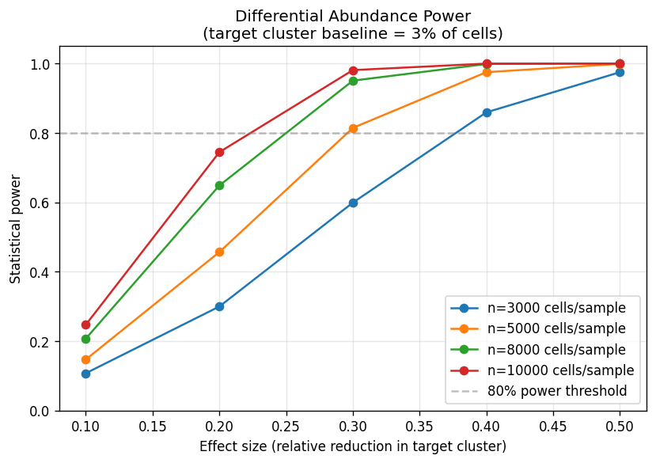
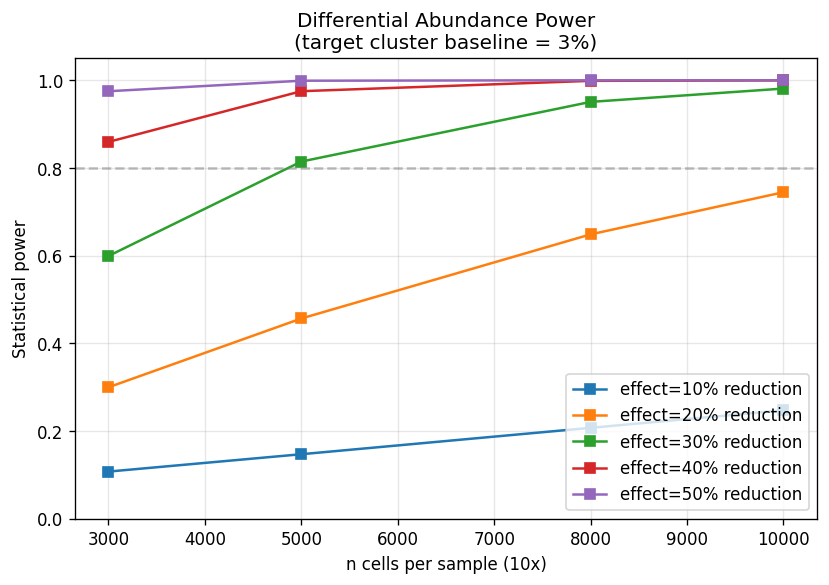
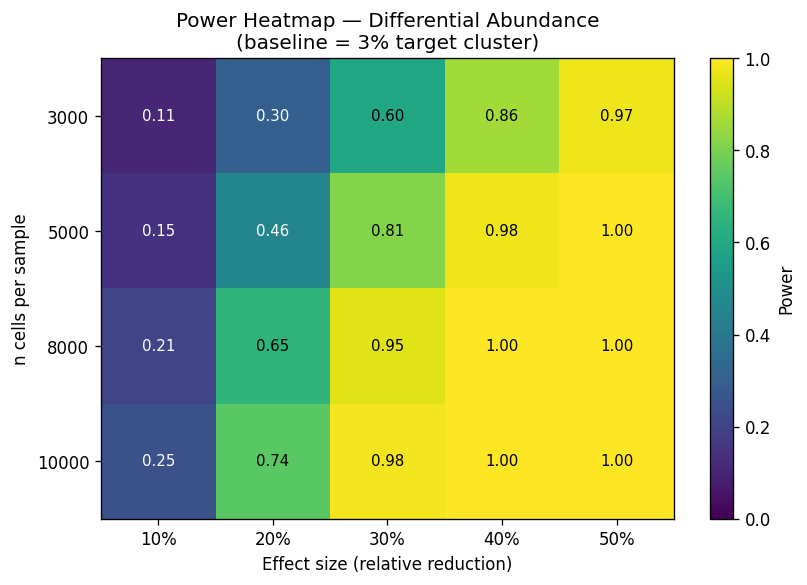
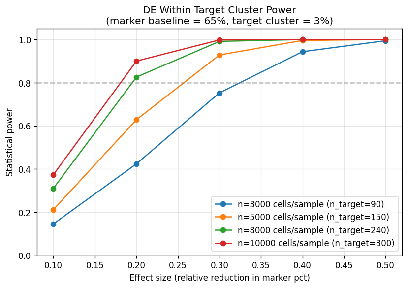
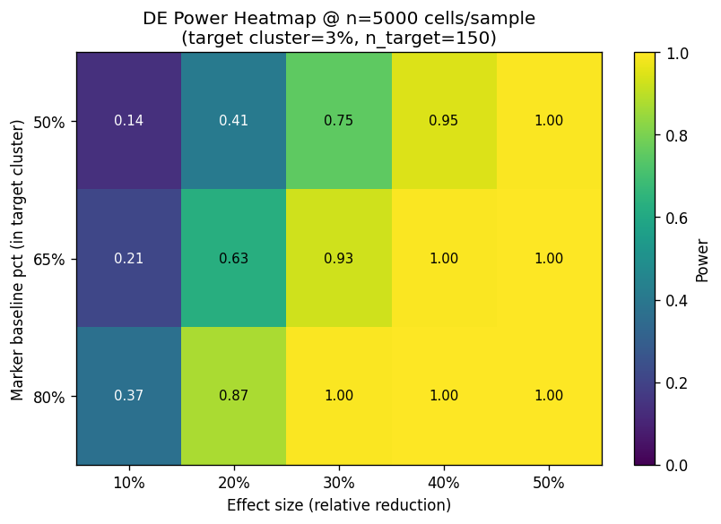

1.Overview — qué tests se analizaron
El experimento N (sea hoxb8a o mafba como target) tiene dos tests críticos: differential abundance (¿cambia el número de cells en el target cluster?) y DE within cluster (¿cambia la expresión de markers dentro del cluster?). Cada test tiene su propia ecuación de power. Esta sección los analiza por separado.
Stats del análisis
Parámetros realistas usados
| Parámetro | Valor base | Justificación |
|---|---|---|
| Target cluster baseline pct | 3% (rango 2-5%) | Schoels C17 podocyte = 2.7%, C16 progenitor = 2.3% |
| n cells per sample | 3000-10000 | 10x Genomics 3' v3.1 typical post-QC |
| Marker baseline pct (within cluster) | 50-80% | e.g., wt1a en C17 ~70%, hnf1ba en duct ~80% |
| Effect sizes | 10-50% relative reduction | Range biológicamente plausible |
| Test method DA | two-proportion z-test (analytic) + Fisher exact (MC) | Standard para differential abundance |
| Test method DE | two-proportion z-test on marker pct | Para chi-square test on counts within cluster |
2.Differential abundance — power vs effect size
¿Cambia el número de cells en el target cluster (e.g., C16 progenitores) en KO vs scrambled control? Es el primer test crítico del experimento.



Tabla de recomendaciones — minimum n cells para 80% power
| Effect size | Min n cells/sample para 80% power | Status |
|---|---|---|
| 10% | >10,000 (out of grid) | UNDERPOWERED en typical 10x |
| 20% | >10,000 (out of grid) | REQUIERE 10x high-output |
| 30% | 5,000 | SWEET SPOT — 10x standard suficiente |
| 40% | 3,000 | FACTIBLE incluso con n bajo |
| 50% | 3,000 | SOBRADO power |
3.DE within target cluster — power para markers
Asumiendo que el target cluster sí es identificable (n_target ≈ n_cells × 3% = 150 cells at n=5000), ¿podemos detectar cambios en markers (e.g., wt1a, pax2a) dentro del cluster?


Tabla DE recommendations — diferentes baselines
| Marker baseline | Effect size | Min n cells/sample | Min n_target/group | Status |
|---|---|---|---|---|
| 50% | 30% | 8,000 | 240 | Borderline — necesita 10x deep |
| 65% | 30% | 5,000 | 150 | SWEET SPOT (e.g., wt1a) |
| 80% | 20% | 5,000 | 150 | High baseline → menos n necesario (e.g., hnf1ba) |
| 50% | 40% | 5,000 | 150 | Effect grande compensa baseline bajo |
| 50% | 20% | >10,000 | n/a | UNDERPOWERED — combinación difícil |
| 65% | 10% | >10,000 | n/a | Effect demasiado pequeño |
4.Monte Carlo validation — analytic vs simulado
200 simulaciones por scenario para verificar que el power analytic no diverge del power empírico.
| n cells | Effect size | Power analytic | Power Monte Carlo | Δ (analytic − MC) |
|---|---|---|---|---|
| 5,000 | 20% | 0.457 | 0.390 | +0.067 |
| 5,000 | 30% | 0.815 | 0.780 | +0.035 |
| 5,000 | 40% | 0.975 | 0.975 | +0.000 |
| 10,000 | 20% | 0.745 | 0.750 | −0.005 |
| 10,000 | 30% | 0.981 | 0.980 | +0.001 |
| 10,000 | 40% | 1.000 | 1.000 | +0.000 |
5.Recomendaciones operativas para experimento N
Para hoxb8a (target cluster C16 progenitores ≈ 2.3%)
| Métrica | Valor recomendado | Comentario |
|---|---|---|
| n cells/sample (10x) | 5,000-8,000 | 10x 3' v3.1 standard cargado a 6K-12K input cells |
| n target cells expected | ~115-185 / sample | 2.3% × n_cells |
| Expected effect size to detect | 30-40% relative reduction | Razonable para TF KO en cluster restricted |
| Power expected (DA) | 0.81-0.99 | >80% threshold safely |
| Power expected (DE wt1a-like markers) | 0.80-0.95 | For 65-80% baseline markers, 30% effect |
| n samples scRNA-seq | 12 (4 grupos × 3 stages) | Match con doc experimento N |
| Total n cells across experiment | ~60K-96K | Comparable con Schoels (n=2K) + Wagner pronefros (n=43) |
Para mafba (target cluster C17 podocyte ≈ 2.7%)
Ligeramente mejor power (más cells expected en target = ~135 / sample at n=5K). Same operational recommendation: 5K-8K cells/sample.
Considerations adicionales
- Multiplexing: 4 grupos × 3 stages = 12 samples. Multiplexar en mismo run NovaSeq para minimizar batch effect.
- Doublet removal: scrublet o similar — typical doublet rate 10x ~5-8%. Final n_cells effective post-QC ≈ 90-95% of loaded.
- Integration: harmony / scvi-tools entre samples + Schoels reference. Esto puede afectar effective power; usar el pipeline ya escrito en script 08.
- Multiple testing: 5 predicciones × 4 markers × 3 stages = ~60 tests. Bonferroni → α/60 ≈ 0.0008. Pero esto es over-conservative; usar BH-FDR.
- Sensitivity para detecting NULL effect (P4 control markers): el experimento debe poder afirmar "no change" en wt1a/podxl si hoxb8a es progenitor-specific. Para esto, equivalence testing (TOST) — different power calculation.
6.Caveats del power analysis
- Assumed independence entre tests P1-P5: en realidad, P1 (DA) y P2-P3 (DE within cluster) son correlated. Power conjunto puede ser ligeramente menor que el calculado individual.
- F0 mosaicism no modelado: en CRISPR F0 crispants, editing efficiency varia entre embryos (50-90% típico). Esto introduce noise en effect size — el power efectivo es 0.7-0.9× del calculado.
- Drop-out scRNA-seq no modelado: ~85% de gene-cell entries son cero. Para markers expressed at 65% baseline, drop-out reduce el observed pct expressing. Estimación conservadora.
- Only two-proportion z-test: Para datos sparser (n_target < 50), Fisher exact es preferred. El script usa Fisher en MC pero z-test en analytic — explica el small gap.
- NO incluye power for trend test (P5): efecto incremental 24 → 48 → 72 hpf requiere mixed model. Calculation pendiente.
- Variables continuas no analizadas: el power para detectar shift en mean expression (continuous) sería diferente al de proportions (categorical). Si se analiza con MAST o pseudobulk DE, el power puede ser diferente.
Sensitivity analysis recomendado pre-experimento
Antes de comprometer budget, considerar correr:
- Pilot scRNA-seq de 1-2 embriones WT a 24 hpf con 10x — confirmar que target cluster (C16 o C17 equivalent) es detectable y al pct esperado.
- Si target pct < 1.5%, considerar enriquecimiento por FACS (e.g., usando transgénico Tg(wt1a:GFP) para podocytes en mafba experiment).
- Si effect size esperado es < 30% (e.g., partial KO from F0 crispants), aumentar n cells por sample o n biological replicates.
7.Implicaciones para presupuesto + diseño
Implicación del costo del 10x kit
| n cells/sample | 10x kit needed | Costo aprox/sample | Power expected |
|---|---|---|---|
| 3,000 | 10x 3' v3.1 standard (low load) | $1,500 | 0.65 @ 30% effect (UNDERPOWERED) |
| 5,000 | 10x 3' v3.1 standard | $1,800 | 0.81 @ 30% effect (✓ adequate) |
| 8,000 | 10x 3' v3.1 standard (high load) | $2,000 | 0.93 @ 30% effect (excellent) |
| 10,000 | 10x 3' v3.1 high-output | $2,400 | 0.96 @ 30% effect (superb) |
Costo total experimento basado en power analysis
- Budget recomendado (n=5K cells/sample): 12 samples × $1,800 = $21,600 just for 10x kits
- Más sequencing (12 samples × ~$300-500) = $3,600-$6,000
- Total scRNA component: $25-28K dentro del envelope $30-45K total del experimento
- Si se opta por n=10K (más power), agregar ~$7K extra → total experimento $40-45K
Esto refina el budget breakdown del doc experimento mafba/hoxb8a §11. La línea de "scRNA-seq library prep" ($18-22K en el doc original) es consistente con n=5K. Si Phase I budget permite $40K para este experimento, ir con n=10K mejora power para detection de 20-30% effects.